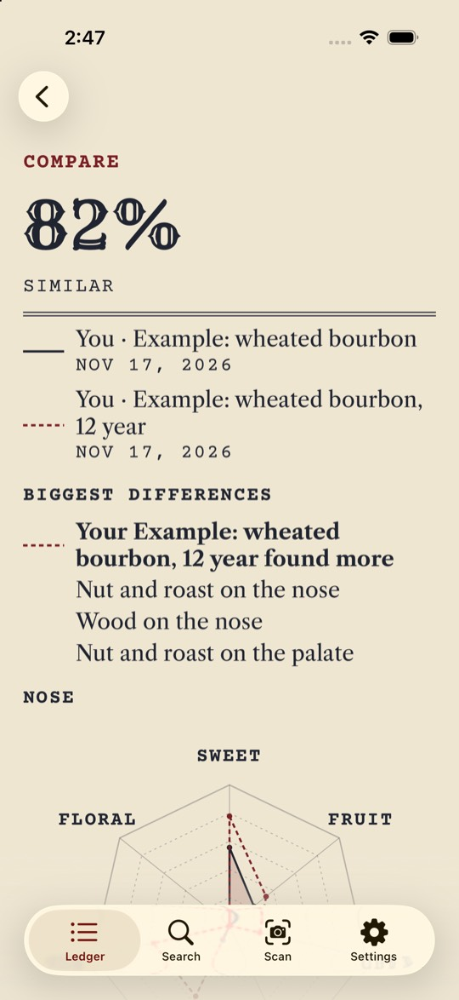
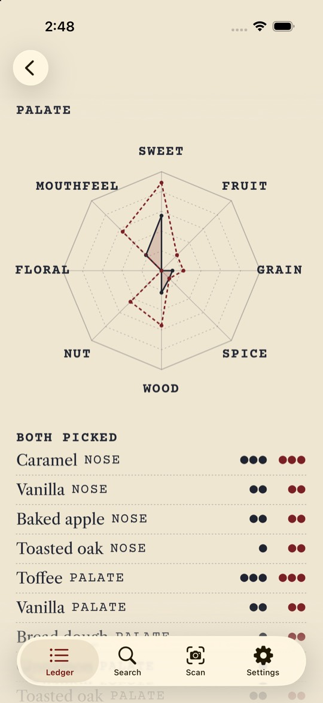
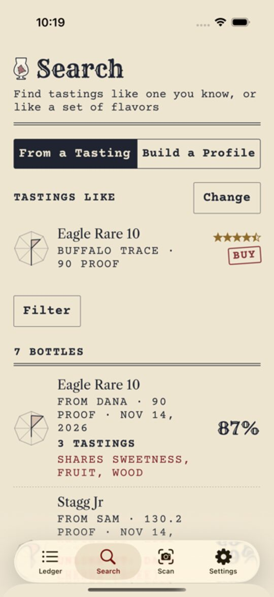
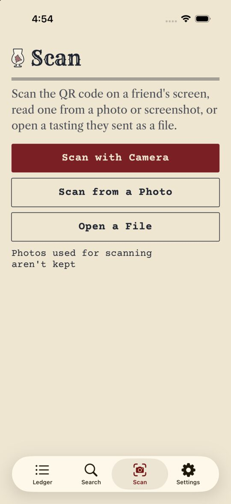
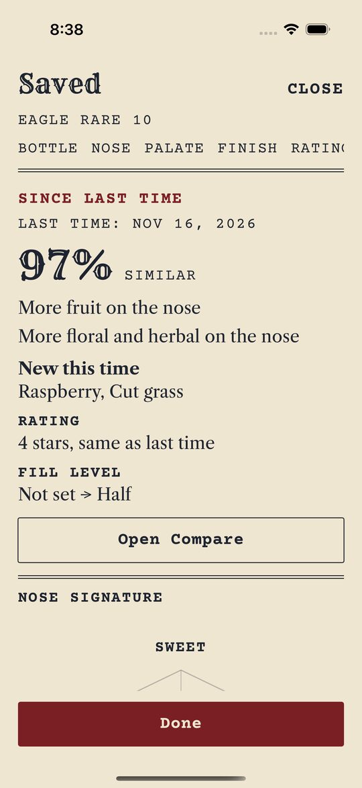

How to use BourbonSense
BourbonSense has four tabs: Ledger (your tastings), Search (find similar), Scan (receive a friend's note) and Settings. This guide walks through each, in the order you'll probably use them.
Getting started
- Enter your date of birth. BourbonSense is for adults of legal drinking age (21 and over in the US); only the result is kept, never the date.
- Read the three short introduction screens, or skip them.
- Enter the name your friends will see on notes you share (optional; you can change it later in Settings).
- A short tour shows you around the Ledger, a tasting's page and the other tabs. You can skip it at any step and replay it from Settings → Show the Tour.
Your Ledger starts with a few example tastings, marked Example, so Compare and Find similar have something to work with. You can delete them.
Record a tasting
Tap New Tasting on the Ledger. A tasting has six steps; skip any you like. It's saved after the first step and every change after that is saved as you go.
- Bottle
- Pick a bottle you've tasted before, or add one: name, distillery, edition, proof, age, batch, barrel and more. Scan its barcode and BourbonSense fills in what it knows. Note the day you opened it and how full it is.
- Nose
- Pick the color in the glass, then the flavors you smell on the wheel.
- Palate
- The flavors you taste, on the palate's wheel (it adds mouthfeel).
- Finish
- Short, medium or long, with an optional note.
- Rating
- Up to five stars in half steps, and a verdict: Pass, Try, Buy or Bunker (stock up).
- Notes
- Nose, palate and general notes, and up to four photos. Photos stay on your phone.

The flavor wheel
- Tap a family on the wheel (sweet, fruit, grain, spice, wood, nut and roast, floral and herbal) to see its flavors.
- Tap a flavor to add it as a hint ●.
- Tap it again for clear ●●, and a third time for dominant ●●●.
- A fourth tap removes it, with Undo in case you didn't mean to.
Everything you picked shows under Selected, and the flavors you use most often wait under Recent, so a repeat tasting takes a minute or two.

The Ledger
- Mine / From friends switches between your tastings and the notes friends sent you.
- Search looks through bottle names, distilleries and your notes.
- Filter narrows the list, for example by verdict or proof; Rating, Name and Dist. sort it.
- By bottle shows one row per bottle, with how many times you've tasted it.
- Tap a row to open the tasting. Deleted something by mistake? Tap Undo within 10 seconds.
Each row shows a small palate shape, the stars and the verdict stamp, so you can scan your Ledger for the pours you liked.
Reading a signature
A tasting's page shows its signature: a radar with one spoke per flavor family, drawn separately for the nose and the palate. The palate adds an eighth spoke, mouthfeel (creamy, oily, warming and so on). The further a point reaches, the more that family stood out, from the flavors you picked and how strongly.
Under each radar are the flavors you picked, with their dots, and your notes for that stage. Below them: the finish, your notes, and the buttons Share, Taste Again, Compare, Find Similar, Edit and Delete.


Compare two tastings
On a tasting's page, tap Compare and pick another tasting, yours or a friend's. You'll see:
- how similar they are, as a percentage;
- the biggest differences, family by family;
- both signatures drawn over each other, nose and palate: the tasting you started from solid, the other dashed;
- the flavors both picked, with each one's strength side by side;
- the flavors only one of them has.


Find similar bottles
Tap Find Similar on a tasting, or open the Search tab:
- From a Tasting ranks the bottles in your Ledger by how much they taste like the one you chose.
- Build a Profile lets you pick the flavors you're in the mood for and finds the bottles closest to them.
Each bottle shows once, at its best match, with the flavors it shares. Weaker matches also show how they differ. Filter can include the bottle you started from.

Share a tasting
- On one of your tastings, tap Share. The screen shows exactly what your friend will get.
- Tap Show QR Code and let your friend scan it, or Send File to send it through Messages, AirDrop, email or any app.
The price you paid and your photos are never shared. Your name on the note is the one in Settings.

Receive a friend's note
Open the Scan tab:
- Scan with Camera reads the QR code on your friend's screen.
- Scan from a Photo reads a QR code in a photo or screenshot. The photo isn't kept.
- Open a File opens a note they sent you. Tapping the file in Messages or Mail works too.
You see the note first, then save it to your Ledger under From friends, matched to your bottle if you have it.

Taste a bottle again
Tap Taste Again on a tasting or a bottle. Start with an empty wheel, or start from last time with your previous flavors picked, then change what's different.
When you save, Since last time shows how similar the two tastings are, which flavors are new or gone, how your rating moved, and how long the bottle has been open. Starting a second tasting of the same bottle on the same day? BourbonSense asks whether you meant to continue the first one.

Your bottles
Tap a bottle's name on a tasting, or a row in the Ledger's By bottle view. Once you've tasted a bottle twice, its page sums up:
- how well your notes agree from one tasting to the next;
- your latest and average rating;
- your nose and palate signatures, combined;
- the flavors you pick most;
- every tasting, with how long the bottle had been open and how full it was.

Settings and backup
- Your name
- Shown on notes you share.
- Appearance
- System, light or dark.
- Crash reports
- On or off. They never include your notes, bottles or names.
- Barcode lookup
- Look up an unknown barcode online. Only the barcode is sent.
- Export
- Saves your whole journal (without photos) to a file you keep wherever you like.
- Import
- Adds a backup file back in; nothing is duplicated.
- Delete all
- Removes everything from this phone, with a chance to export first.
- Show the Tour
- Replays the tour.